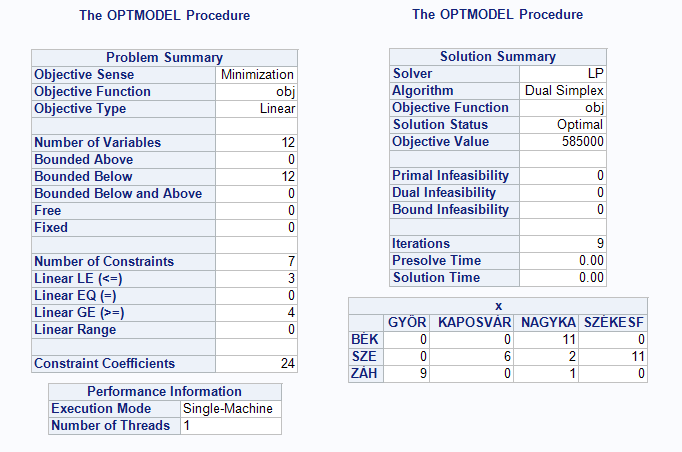

4.1 Elméleti bevezető:
4.2 Kidolgozott példa:
2.1. Elméleti levezetés, kidolgozás
A folyamat végére értünk, az összköltség meghatározása:
4.3 Példafeladat kódjai:
3.1. IBM CPLEX - Példa kód
3.2. Lingo - Példa kód
3.3. R - Példa kód
3.4. SAS/OR - Példa kód
IV.1. ábra. Eredmény
4.4 Feladatok:
1.feladat
Négy gabonafeldolgozó üzem gabonaszállító teherkocsikat rendel a RailCargo Hungaria vasúttársaságtól. A vasúttársaságnak Záhonyban 10, Szegeden 19 és Békéscsabán pedig 11 darab teherkocsija áll rendelkezésre. A feldolgozó üzemek igényei a következők: Székesfehérvárinak 11, Kaposvárinak 6, Nagykanizsainak 14, Győrinek 9 gabonaszállítóra van szüksége. A telephelyekről az üzemekbe való szállítás költségei a következők:
| Székesfehérvár | Kaposvár | Nagykanizsa | Győr | Kocsik száma | |
|---|---|---|---|---|---|
| Záhony | 10000 | 21000 | 17000 | 13000 | 10 |
| Békéscsaba | 20000 | 11000 | 16000 | 24000 | 11 |
| Szeged | 13000 | 15000 | 21000 | 30000 | 19 |
| Igény | 11 | 6 | 14 | 9 |
Határozza meg a legkisebb költségű szállítási tervet!
2.feladat
Egy befektető 15 millió forintot szeretne befektetni és úgy határoz, hogy 7 milliót részvénybe, 5 milliót kötvénybe és 3 milliót lekötött betétbe fog elhelyezni. 6 társaságnál van lehetősége befektetni a pénzét:
az elsőnél maximálisan 4 milliót, a másodiknál 3 milliót, az összes többinél csak 2 milliót helyezhet el. A következő táblázat azt mutatja- az alapok szerint-, hogy mekkora hozamot érhet el, ha az egyes társaságoknál helyezi el a pénzét.
| A | B | C | D | E | F | Keret | |
|---|---|---|---|---|---|---|---|
| Részvény | 12 | 10 | 15 | 13 | 16 | 14 | 7M |
| Kötvény | 8.1 | 7.6 | 7.3 | 7.8 | 7.4 | 8 | 5M |
| Betét | 5.7 | 6.1 | 4.9 | 5.4 | 4.5 | 5.3 | 3M |
| Maximálisan elhelyezhető összeg | 4M | 3M | 2M | 2M | 2M | 2M |
Hogyan kellene befektetnie a pénzét, hogy maximális legyen a várható hozam?
3.feladat
Egy társaság 3 konzervgyárral rendelkezik, melyekből a kész termék szállítása 5 nagy áruházba történik. Az áruházak jelezték, hogy havonta mennyi konzervre van szükségük: Tesco 300, Auchan 400, Spar 350, Coop 250, CBA 100. Az első konzervgyárban 500, a másodikban 540, a harmadikban 360 db konzervet állítanak elő havonta. A szállítás költségei konzervenként a következők:
| Gyár | Tesco | Auchan | Spar | Coop | CBA | Kapacitás |
|---|---|---|---|---|---|---|
| K1 | 1.2 | 1.3 | 1.5 | 1.1 | 1.7 | 500 |
| K2 | 1.7 | 2.1 | 1.8 | 1.3 | 1.4 | 540 |
| K3 | 1.6 | 1.6 | 1.7 | 1.8 | 1.8 | 360 |
| Igény | 300 | 400 | 350 | 250 | 100 |
Készítsük el a minimális szállítási költséggel járó megoldását a feladatnak!
4.feladat
A Debreceni önkormányzat úgy dönt, hogy szeretné a város határában levő 2 darab 100 hektáros és 1 darab 80 hektáros földterületeit elárverezni. A földterületekre öt gazdálkodó licitál, a területek értéke 1000 Ft/hektár. A következő táblázat tartalmazza a licitálásokat a különböző földterületek szerint:
| Vevő | 1.föld | 2. föld | 3. föld | Limit |
|---|---|---|---|---|
| István | 102 | 120 | 130 | 70 |
| Béla | 105 | 137 | 125 | 70 |
| Pál | 114 | 131 | 121 | 70 |
| Attila | 108 | 123 | 113 | 70 |
| Imre | 106 | 129 | 121 | 70 |
| Össz. terület | 100 | 100 | 80 |
Az önkormányzat nem szeretné, hogy egy gazdálkodó 70 hektárnál több földet szerezzen.
Ezek alapján hogyan kellene eladnia a földeket az önkormányzatnak, hogy maximalizálni tudja a bevételét?
5.feladat
Egy bank tulajdonában 3 iroda van, amelyek csekkek feldolgozásával foglalkoznak. Három fajta csekk kerül feldolgozásra: eladói, fizetési és személyi csekk. A bankba minden nap 3200 darab csekk érkezik, amelyből 1200 darab fizetési, 1000-1000 pedig a eladói és személyi csekk. Vasárnap a bank zárva tart, így azon a napon nem történik ügyintézés. Az első irodában 8500 csekket, a másodikban 6100 csekket, a harmadiknál 4600 csekket tudnak feldolgozni minden héten. A csekkek feldolgozásának költségei helyszíntől függően változnak az alábbiak alapján:
| Csekk | 1.iroda | 2. iroda | 3. iroda | Összesen |
|---|---|---|---|---|
| Eladói | 100 | 120 | 110 | 1200 |
| Fizetési | 90 | 95 | 80 | 1000 |
| Személyi | 100 | 90 | 85 | 1000 |
| Kapacitás | 8500 | 6100 | 4600 |
A bank szeretné úgy megtervezni a csekkek feldolgozását, hogy közben minimalizálja a költségeket.
Határozza meg a feldolgozási tervet!
6.feladat
Miskolcon és Salgótarjánban fakitermelés folyik és a faanyagot helyben fel is dolgozzák. Miskolcon heti 1400 m3, Salgótarjánban 600 m3 faanyagot állítanak elő. A feldolgozott anyag elszállítása 2 városba történik, Szegedre és Békéscsabára. A megrendelő városok igényei a következők: Békéscsabának 900 m3, Szegednek 1100 m3 feldolgozott faanyag. A szállítás a célállomásra vonattal is történhet, de amíg az árut fel nem pakolják a tehervagonra, addig Kecskeméten és Szolnokon lehetőség van a fa tárolására. A következő táblázat a szállítási költségeket mutatja: (sor-honnan,oszlop-hová)
| Szeged | Békéscsaba | Kecskemét | Szolnok | Kapacitás | |
|---|---|---|---|---|---|
| Miskolc | 56 | 62 | 24 | 27 | 1400 m3 |
| Salgótarján | 73 | 69 | 28 | 30 | 600 m3 |
| Kecskemét | 29 | 36 | 400 m3 | ||
| Szolnok | 26 | 44 | 600 m3 | ||
| Igény | 1100 m3 | 900 m3 |
Hogyan készítené el a szállítási tervet, ha Kecskeméten 400 m3, Szolnokon 600 m3 tudnak átrakodni vonatra?
7.feladat
A ”Wheelers” bicikligyár 4 darab gyártóüzemmel rendelkezik, melyek közül 2 Debrecenben, 2 pedig Hajdúböszörményben található. A 4 üzemből 13, 19, 25, 21, 16, 26 darab kerékpárt kell a 6 megrendelőhöz szállítani, melyek közül 4 darab Debrecenben (B1-B4), és 2 darab (B5-B6) Hajdúböszörményben található. A gyárak termelési kapacitása és a szállítási költségek a következő táblázatban találhatóak:
| B1 | B2 | B3 | B4 | B5 | B6 | Kapacitás | ||
|---|---|---|---|---|---|---|---|---|
| Debrecen | Gy1 | 7 | 9 | 12 | 10 | 10 | 9 | 32 |
| Gy2 | 8 | 11 | 10 | 13 | 11 | 9 | 46 | |
| Hajdúböszörmény | Gy3 | 12 | 11 | 11 | 9 | 10 | 7 | 18 |
| Gy4 | 10 | 8 | 9 | 11 | 11 | 10 | 24 | |
| Igény | 13 | 19 | 25 | 21 | 16 | 26 |
a) Hogyan tervhezhető meg, hogy ki hova szállítson, ha szeretné minimalizálni az összes szállítási költséget?
b) Hogyan változik ez az érték, ha a szállítás csak városon belül oldható meg, azaz a debreceni gyár csak debreceni boltba szállíthat?
8.feladat
4 új újságárusító jelentkezett a Naplónál, hogy szeretné az újságot a boltjukban eladásra kínálni. Az egyes árusok jelezték az igényeiket, ami 150, 195, 120, 125 darab újság lenne. A Napló 3 nyomdával rendelkezik a városban, viszont ezek csak 250, 150, 190 újságot tudnak előállítani. A hírlapokat a nyomdából a boltokba a lehető legrövidebb úton szeretné eljuttatni. A táblázat az egyes helyek közötti távolságokat adja meg km-ben:
| B1 | B2 | B3 | B4 | Kapacitás | |
|---|---|---|---|---|---|
| NY1 | 2 | 4 | 2 | 1 | 250 |
| NY2 | 3 | 3 | 5 | 2 | 150 |
| NY3 | 4 | 4 | 1 | 3 | 190 |
| Igény | 150 | 195 | 120 | 125 |
a) Melyik nyomdából, hová és hány újságot kell szállítani?
b) A NY3 → B3 vezető úton csőtörés volt és egy hétig nem lehet használni, valamint NY2 → B4 úton aszfaltozás miatt egy hónapig nem lehet közlekedni. Ebben az esetben hogyan nézne ki a szállítási terv?
9.feladat
Egy építkezési vállalat 3 bázissal rendelkezik, ahonnan adott építkezési területre betont tud szállítani. A következő hónapban 5 épület lesz a betonozás fázisában, melyekhez előreláthatóan 720, 340, 460, 500, 660 tonna beton kell. A beton szállítása 20 tonna kapacitású betonkeverőkkel történik, a bázisokon pedig 1040, 860, 880 tonna betont tudnak majd el?állítani. A bázisok és az építkezési helyek közötti legrövidebb út hosszát a következő táblázat mutatja:
| ÉH1 | ÉH2 | ÉH3 | ÉH4 | ÉH5 | Kapacitás | |
|---|---|---|---|---|---|---|
| B1 | 2.3 | 4.6 | 1.5 | 8.3 | 4.5 | 52 |
| B2 | 3.5 | 7.6 | 4.3 | 2.2 | 4.3 | 43 |
| B3 | 6.5 | 1.2 | 6.3 | 4.5 | 5.7 | 44 |
| Igény | 36 | 17 | 23 | 25 | 33 |
A szállítási költségeket sávokban határozták meg: a 2 km-nél rövidebb út 2000 Forint, 2-4 km közötti út 3500 Forint, 4-6 km 4800 Forint ás a 6 km-nél hosszabb út 7200 forint érték?.
Határozza meg a szállítási tervet és mennyi lesz a szállítás minimális költsége!
10.feladat
Egy új szállító cég 3 kistermelőtől átveszi a tejek szállítását, melyet 4 boltba kell eljuttatni. Az első termelőnél 10 tehén van, melyek egyenként 3.5 liter tejet adnak, a második termelőnél 20 tehén egyenként 4 liter tejet ad. A harmadik termelőnek csak 5 tehene van, amelyek összesen 20 liter tejet adnak. A boltok igényei a következők: 32,24,43,36 liter.
A következő táblázat tartalmazza az utak költségét:
| B1 | B2 | B3 | B4 | Kapacitás | |
|---|---|---|---|---|---|
| T1 | 7 | 3 | 4 | 4 | 35 |
| T2 | 2 | 4 | 6 | 5 | 80 |
| T3 | 4 | 5 | 3 | 3 | 20 |
| Igény | 32 | 24 | 43 | 36 |
Az első bolt szólt önnek, hogy nem kérnek tejet a második termelőtől, mert korábban többször is romlott árut kaptak tőlük.
Ezek alapján mennyi lesz a minimális költség, ha minden igényt ki akarunk elégíteni?
Készítse el a szállítási tervet?
11.feladat
A PcX Kft. számítógép-szereléssel és értékesítéssel foglakozik. Az előző hónapban 4 fogyasztó megrendelt 30, 26, 25, 24 darab laptopot, azonban a rendelést felvevő kolléga valamit elrontott és emiatt csak 85 laptopot gyártottak. A kész termékek közül 35 darab az első, 50 darab a második raktárban van. A cégek jelezték, hogy ha nem kapják meg a laptopokat, akkor kártérítést követelnek. ´Igy minden egyes ki nem elégített követelés után büntetést kell fizetni. Ezek 100, 130, 105, 120 euró kártérítési összegeket jelentenek. A többi laptopot viszont le kell szállítani. A fogyasztókhoz vezető szállítás költségei a következők:
| F1 | F2 | F3 | F4 | Kapacitás | |
|---|---|---|---|---|---|
| R1 | 7 | 8 | 5 | 6 | 35 |
| R2 | 9 | 7 | 7 | 8 | 80 |
| Igény | 32 | 24 | 43 | 36 |
Hogyan alakítaná ki a minimális költségü szállítási tervet, ha a büntetéseket is figyelembe veszi a költségek minimalizálása során?
Ki vagy kik lesznek azok, akik nem fognak minden laptopot megkapni
12.feladat
A Furniture két gyárában irodai székeket állítanak elő és mindkét üzem 240 darabot tud legyártani. Ezeket a székeket 3 raktár közül előbb az egyikbe elszállítják, majd onnan az 5 áruházuk valamelyikébe kerülnek értékesítésre, melyek igényei: 80, 104, 128, 64, 64 darab szék. Az első és a második raktárban csak 100-100 széket tudunk tárolni, a harmadikban bármennyit. A székek raktárban való tárolásának költsége: az első raktárban 50, a másodikban 45, a harmadikban 60 ft/szék. A szállítási költségeket a különböző helyek között a következő táblázat mutatja:
| 1.raktár | 2.raktár | 3.raktár | 1.áruház | 2.áruház | 3.áruház | 4.áruház | 5.áruház | |
|---|---|---|---|---|---|---|---|---|
| 1.gyár | 40 | 50 | 55 | 0 | 0 | 0 | 0 | 0 |
| 2.gyár | 45 | 45 | 60 | 0 | 0 | 0 | 0 | 0 |
| 1.raktár | 0 | 0 | 0 | 72 | 78 | 82 | 91 | 60 |
| 2.raktár | 0 | 0 | 0 | 81 | 80 | 76 | 92 | 72 |
| 3.raktár | 0 | 0 | 0 | 74 | 81 | 78 | 94 | 83 |
Egy széket előbb raktárba kell szállítani és csak azután az áruházba.
Hova és mennyi széket szállítson a gyártó, ha minimalizálni akarja a költségeket?